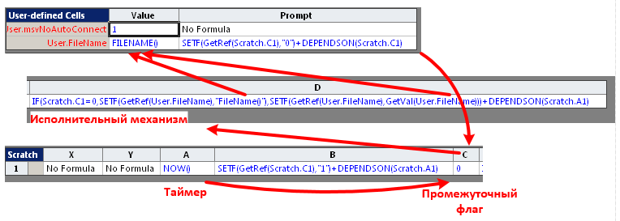

В предыдущей статье Функция FILENAME() и все такое я рассказывал о конструкции из формул шейп-листа, в которой формулы выстраивались в своего рода логическую цепочку и должны были срабатывать одна за другой. Кстати, цепочка была замкнутой, что еще интереснее. Но так как наши представления о последовательности выполнения формул не всегда соответствуют действительности, возникло желание каким-то образом посмотреть реальную последовательность.
Итак, имеем исходный документ (VSDX), в котором прописаны несколько связанных формул в шейп-листе документа и ссылающаяся на него формула в единственном шейпе на странице. Повторю картинку-схему.

Так как нас интересует последовательность изменения ячеек, напрашивается использование события CellChanged. Как выбрать ячейки, за которыми будем следить? Простейший вариант - берем объект документ и объект шейп и следим за изменениями всех ячеек. А чтобы потом разобраться, выводим в протокол: имя ячейки, время срабатывания, формулу в ячейке. Кроме этого добавил четвертый параметр - значение в ячейке, из-за которой все и затевалось.
Сразу приведу всю программную часть
Dim WithEvents shpDoc As Visio.Shape
Dim WithEvents shpField As Visio.Shape
Dim s As String
Dim c As Visio.Cell
Private Sub Document_DocumentOpened(ByVal doc As IVDocument)
Set shpDoc = doc.DocumentSheet
Set shpField = doc.Pages(1).Shapes(1)
Set c = shpDoc.Cells("User.FileName")
shpDoc.Data1 = "," & Timer() & "," & "," & c.ResultStr(0)
End Sub
Private Sub Start()
Set shpDoc = ActivePage.Document.DocumentSheet
Set shpField = ActivePage.Shapes(1)
Set c = shpDoc.Cells("User.FileName")
shpDoc.Data1 = "," & Timer() & "," & "," & c.ResultStr(0)
End Sub
Private Sub StopS()
Set shpDoc = Nothing
Set shpField = Nothing
End Sub
Private Sub shpDoc_CellChanged(ByVal Cell As IVCell)
'Debug.Print Cell.Name, Timer(), Cell.FormulaU
shpDoc.Data1 = shpDoc.Data1 & Chr(10) & Cell.Name & "," & Timer() & "," & Cell.FormulaU & "," & c.ResultStr(0)
End Sub
Private Sub shpField_CellChanged(ByVal Cell As IVCell)
shpDoc.Data1 = shpDoc.Data1 & Chr(10) & Cell.Name & "," & Timer() & "," & Cell.FormulaU & "," & c.ResultStr(0)
End Sub
Private Sub PriRes()
Debug.Print ActiveDocument.DocumentSheet.Data1
End SubОбработчики простейшие. Под вопросом было только место вывода протокола. Debug.Print не устроил, потому как регистрация событий по условиям эксперимента должна начаться прямо с момента открытия документа. Естественно, в это время окно Immediate еще закрыто и такой ввод уйдет вникуда.
Вывод в файл может нежелательно исказить картинку эксперимента. Вдруг появятся лишние задержки.
Поэтому было принято решение - накапливать результаты в поле Data1 документа. Поле достаточно продолговатое, если событий не очень много, то его вполне хватит. А в конце содержимое можно выбросить в файл или для простоты - в то же Immediate.
| 46353.18 | dfn_v23.vsdm | ||
| Scratch.A1 | 46353.18 | NOW() | dfn_v23.vsdm |
| Scratch.C1 | 46353.18 | 0 | dfn_v23.vsdm |
| User.FileName | 46353.18 | FILENAME() | dfn_v23.vsdm |
| Fields.Value | 46353.18 | TheDoc!User.FileName | dfn_v23.vsdm |
| Scratch.A1 | 46412.2 | NOW() | dfn_v23.vsdm |
| Scratch.C1 | 46412.2 | 0 | dfn_v23.vsdm |
| User.FileName | 46412.2 | FILENAME() | dfn_v23.vsdm |
| Fields.Value | 46412.21 | TheDoc!User.FileName | dfn_v23.vsdm |
После переброски результатов в файл Excel (через CSV) получилась приведенная выше табличка. Честно говоря, результат оказался несколько неожиданным. Попробуем в нем разобраться.
Маленькая тонкость: файл был сохранен из Visio под именем dfn_v22.vsdm, потом переименован вручную в dfn_v23.vsdm и открыт двойным щелчком по имени файла.
Поэтому ожидалось, что в момент открытия документа будет зафиксировано еще старое имя (из-за бага в функции FILENAME). Однако в первой же строке протокола (событие DocumentOpened) видно новое имя файла.
Следующие 4 строки иллюстрируют срабатывание цепочки событий. Сначала срабатывает таймер Scratch.A1, потом изменяется флаг Scratch.C1, результирующая ячейка User.FileName и ссылающийся на нее шейп Fields.Value.
Последние 4 строки - это уже через одну минуту после старта вновь срабатывает таймер и повторяются изменения четырех ячеек.
Так как дискретность функции Timer невелика, все четыре события в цепочке фиксируются с одним временем, но хотя бы последовательность событий мы видим. Хотя, изменения в шейпе иногда отстают от изменений в документе.
Итак, моменты, которые требуют объяснений:
1. Почему уже при открытии документа фиксируется новое имя.
2. Ожидалась последовательность: C1=1, User.FileName=[значение], C1=0, User.FileName=[функция], но в протоколе видим только вторую половину.
Относительно пункта 1 можно предположить, что один из циклов Visio провел еще до срабатывания события DocumentOpened, и в этом случае цикл из 4 строк просто не вошел в протокол. В принципе предположение правдоподобно и наверное его следует принять в качестве объяснения.
По второму пункту хуже. Конечно, при таком генераторе события C1=1, User.FileName=[значение] длятся очень короткое время. Теоретически перехват может быть построен так, что пропускает очень короткие события. Но все равно создается ощущение какой-то ненадежности. Событие произошло, но программа его не почувствовала. При таком подходе когда-нибудь можно напороться на действительно критическую ошибку.
Ну а метод исследования вроде бы годится. Показал практически то, что ожидалось.
Файл для продолжения исследований